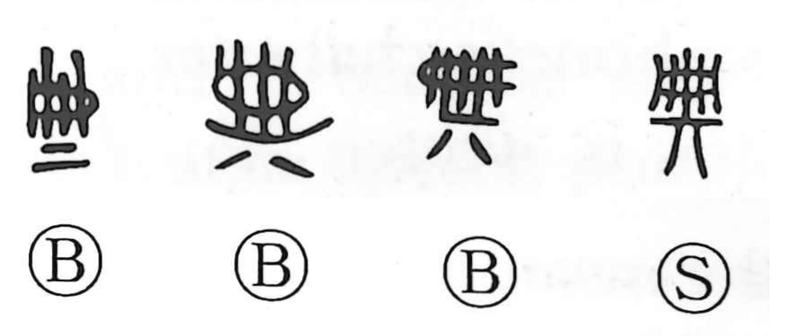

典

Kun: | On: ten
book ・ writing ・ canon ・ code ・ ceremony
Explanation
典 brings together 冊 (册), the bundled slips of bamboo or wood used as early books, and 丌, a stand. In early forms 冊 even resembles a small fence (柵), evoking the closely set, laced slats of those tablets. The character thus pictures a written volume set upon a stand, and so first means a book or writing. Because the writings of antiquity were honored as standards to emulate, the sense naturally extends to taking something as a model, and by further development to law and code.